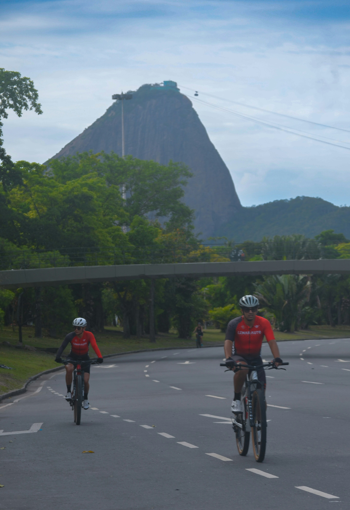

Meu Mundo de Bike
Sobre as bicicletas
A bicicleta é um meio de transporte simples, divertido e também uma ótima forma de praticar atividade física e ter momentos de diversão ao ar livre.
Benefícios de andar de bicicleta
- O ganho de massa muscular melhora a capacidade física e a coordenação motora devido a maior força, equilíbrio e resistência. Quem adota a prática para a vida, pode evitar (ou retardar) a ocorrência de sarcopenia “perda da força e massa muscular que ocorre na terceira idade e com as doenças crônicas”.
- Para adultos e adolescentes, andar de bicicleta gera benefícios que vão além da saúde física. A prática pode reduzir os sentimentos de ansiedade e depressão tanto para pessoas saudáveis quanto para pessoas com síndromes clínicas existentes.
- Por fim, a prática de andar de bicicleta regularmente melhora a saúde, o sono e a qualidade de vida em geral. Para idosos, pedalar ainda reduz o risco de quedas e a dependência física.
